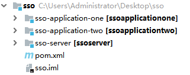
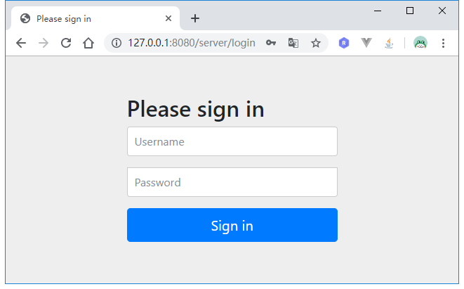
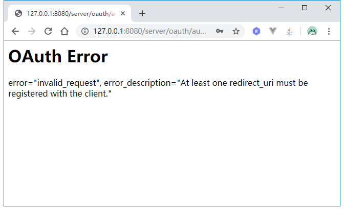
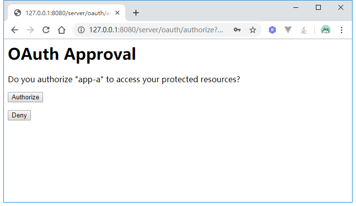
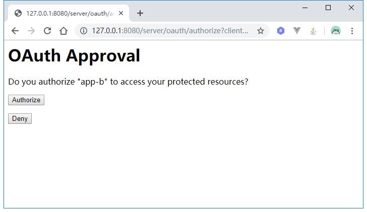
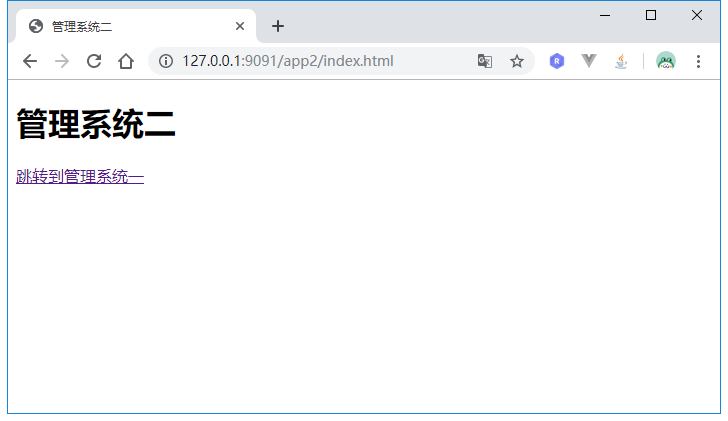
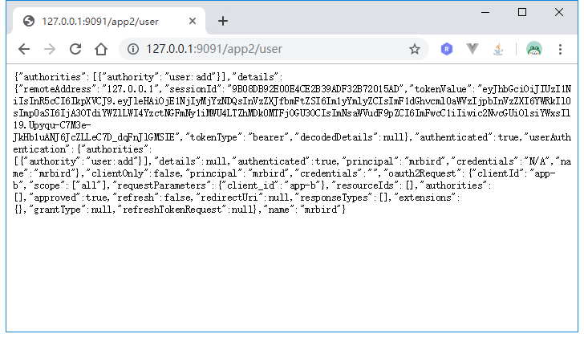
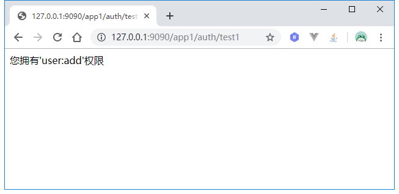
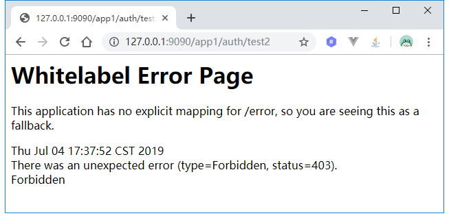

SSO（Single Sign On）即单点登录，效果是多个系统间，只要登录了其中一个系统，别的系统不用登录操作也能访问。比如在浏览器上同时打开天猫和淘宝页面，在天猫页面进行登录，然后回到淘宝页面刷新后会发现淘宝也已经是登录状态了。这节将介绍如何使用Spring Security OAuth2实现单点登录。
框架搭建
我们需要创建一个maven多模块项目，包含认证服务器和两个客户端。
新建一个maven项目，作为项目的父模块，pom如下所示：
1 |
|
然后在该maven项目下新建一个module，artifactId为sso-server（作为认证服务器），pom如下所示：
1 |
|
接着继续新增一个module模块，artifactId为sso-application-one（作为客户端一），pom如下所示：
1 |
|
另外一个客户端和sso-application-one一致，只不过artifactId为sso-application-two。
至此，项目的基本框架搭建好了，结构如下所示:

认证服务器配置
认证服务器作用就是作为统一令牌发放并校验的地方，所以我们先要编写一些基本的Spring Security 安全配置的代码指定如何进行用户认证。
新建一个Spring Security配置类，继承WebSecurityConfigurerAdapter：
1 |
|
上面简单配置了密码加密使用bcrypt方式，并且所有请求都需要认证，认证方式为Spring Security自带的登录页面认证（也可以根据前面教程来自定义登录页面，这里为了简单起见，就直接用自带的登录页了）。
接着需要定义一个自定义用户登录认证的服务：
1 |
|
基本逻辑是用户名随便写，密码为123456，并且拥有user:add权限。这些前面都介绍过了，就不再详细说明了。MyUser的代码如下：
1 | public class MyUser implements Serializable { |
接着开始编写认证服务器配置。
新建SsoAuthorizationServerConfig，继承AuthorizationServerConfigurerAdapter：
1 |
|
Token使用JWT，这些配置都在前面几节OAuth2教程里介绍过了就不再赘述了，这里详细说下configure(ClientDetailsServiceConfigurer clients)的配置：
1 | ... |
这里分配了两个客户端配置，分别为app-a和app-b，因为使用默认的Spring Security登录页面来进行认证，所以需要开启authorization_code类型认证支持。
认证服务器的application.yml配置如下：
1 | server: |
认证服务器的搭建就告一段落了，接下来开始客户端代码编写。
客户端配置
两个客户端的代码基本一致，所以这里只介绍其中一个，另一个可以参考源码。
在客户端SpringBoot入口类上添加@EnableOAuth2Sso注解，开启SSO的支持：
1 | 2Sso |
接下来的重点是配置文件application.yml的配置：
1 | security: |
security.oauth2.client.client-id和security.oauth2.client.client-secret指定了客户端id和密码，这里和认证服务器里配置的client一致（另外一个客户端为app-b）；user-authorization-uri指定为认证服务器的/oauth/authorize地址，access-token-uri指定为认证服务器的/oauth/token地址，jwt.key-uri指定为认证服务器的/oauth/token_key地址。
这里端口指定为9090，context-path为app1，另一个客户端端口指定为9091，context-path为app2。
接着在resources/static下新增一个index.html页面，用于跳转到另外一个客户端：
1 |
|
为了验证是否认证成功，我们新增一个控制器：
1 |
|
另外一个客户端的代码略，可以参考源码。
测试效果
先启动认证服务器，任何在启动两个客户端。启动后，访问http://127.0.0.1:9090/app1/index.html：

可以看到页面被重定向到认证服务器的登录页面，根据我们定义的UserDetailService，用户名随便填，密码为123456。登录后页面跳转到：

页面提示的意思是：非法请求，至少需要一个重定向URL被注册到client。从URL中可以看出，redirect_uri为http://127.0.0.1:9090/app1/login，所以我们修改认证服务器client相关配置如下：
1 |
|
重启认证服务器，重复上面的过程，这次登录后，页面跳转到了授权页面：

点击Authorize：

这时候app-a对应的客户端已经登录了，点击跳转到系统二：

页面直接来到授权页，而不需要重新输入用户名密码，继续点击Authorize：

系统二也已经成功登录，访问http://127.0.0.1:9091/app2/user看是否能成功获取到用户信息：

到这里我们已经实现了单点登录的基本功能了。
但是在这个过程中需要用户点击Authorize授权，体验并不是很好，我们可以去掉它。修改认证服务器Client配置如下：
1 |
|
autoApprove(true)自动授权。修改后重启即可看到效果。
权限校验
Spring Security权限校验前面介绍过了，这里看下在单点登录模式下如何进行权限校验。
在客户端控制器里加入如下代码:
1 | ("auth/test1") |
在客户端新增Spring Security配置类:
1 |
|
改完后，先启动认证服务器，在启动客户端。
在启动客户端的时候出现异常：
1 | Caused by: java.lang.IllegalStateException: @Order on WebSecurityConfigurers must be unique. Order of 100 was already used on cc.mrbird.sso.client.config.WebSecurityConfigurer$$EnhancerBySpringCGLIB$$aa470b71@34d45ec0, so it cannot be used on org.springframework.boot.autoconfigure.security.oauth2.client.OAuth2SsoDefaultConfiguration$$EnhancerBySpringCGLIB$$6f69df92@18137eab too. |
大致意思是，认证服务器已经配置了Spring Security配置，并且顺序为100，和客户端的Spring Security配置冲突了。所以我们修改下客户端的Spring Security配置顺序：
1 | (101) |
让它的优先级小于认证服务器的Spring Security配置。
重新启动客户端，进行单点登录操作，登录成功后，访问http://127.0.0.1:9090/app1/auth/test1：

访问http://127.0.0.1:9090/app1/auth/test2：

返回403，没权限，说明权限注解生效了。
源码链接：https://github.com/wuyouzhuguli/SpringAll/tree/master/66.Spring-Security-OAuth2-SSO